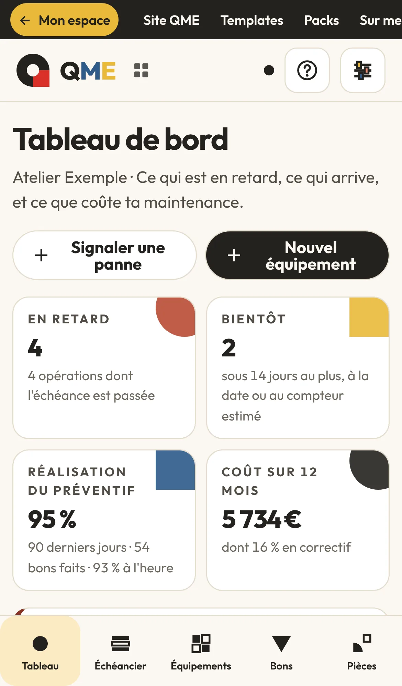
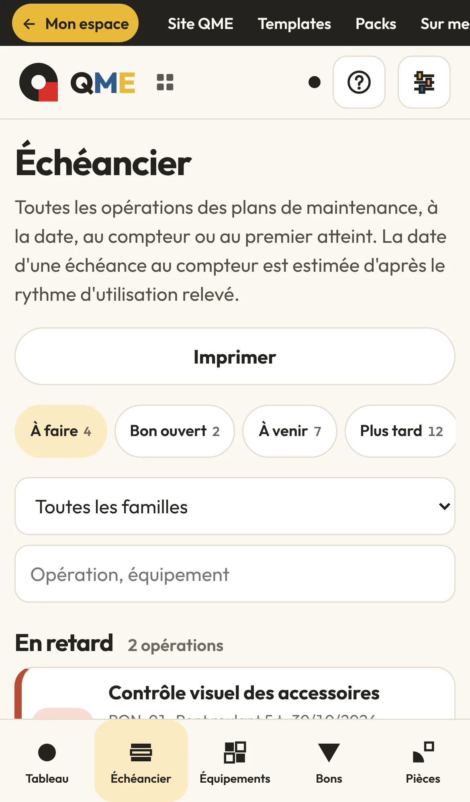
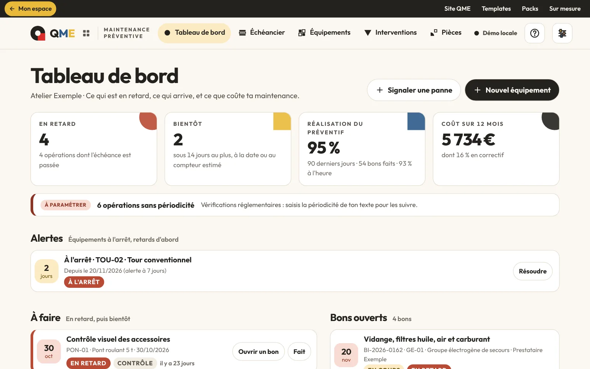

Workshop maintenance
Before:
a clipboard.
After: your phone.
Which machine is overdue
today?
BEFORE · A SHEET ON EACH MACHINE
One sheet per machine.
No dates ahead.
You walk the floor
to find what is late.
AFTER · FRENCH INTERFACE · SAMPLE DATA

The tool, in your pocket.
4 overdue.
2 due soon.
95% of planned jobs done.
Last 90 days.
FRENCH INTERFACE · SAMPLE DATA

Due by date or by
hour meter.
4 to do.
2 already overdue.
FRENCH INTERFACE · SAMPLE DATA

At the office: a lathe
down for 2 days.
€5,734 in 12 months.
16% on breakdowns.
Want one built
for your workshop?
Built in French. Custom tools for small businesses.
qm-engineering.fr/x